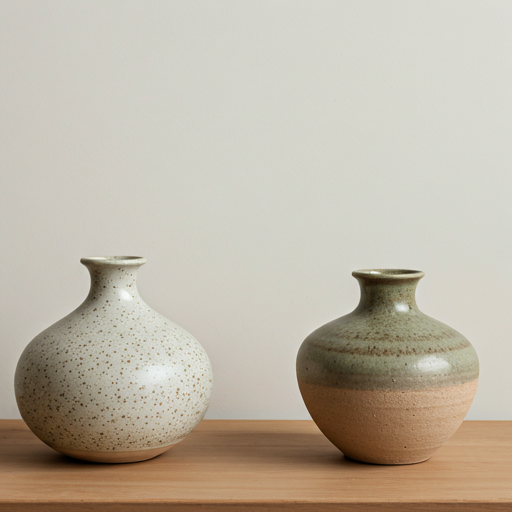
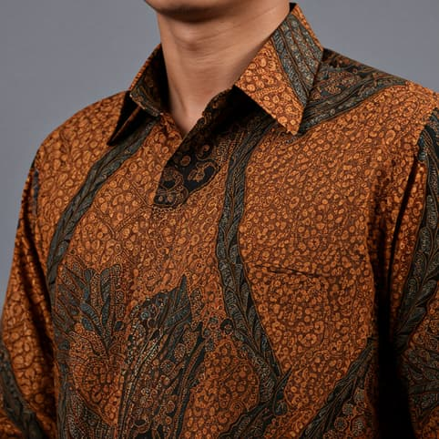

Commission
JASA KREASI
Temukan talenta lokal untuk proyek kreatif Anda. Ilustrasi, desain, hingga kerajinan tangan custom.

Temukan talenta lokal untuk proyek kreatif Anda. Ilustrasi, desain, hingga kerajinan tangan custom.
Belanja langsung karya unik siap pakai. Fashion, keramik, dekorasi rumah, dan aksesoris.



Bid mahakarya heritage berkualitas museum — batik tulis kuno, topeng Barong antik, hingga keris pusaka. Setiap lot diverifikasi keasliannya oleh kurator Karya Lokal.

Lot #001 — Featured
Batik Tulis Parang Barong